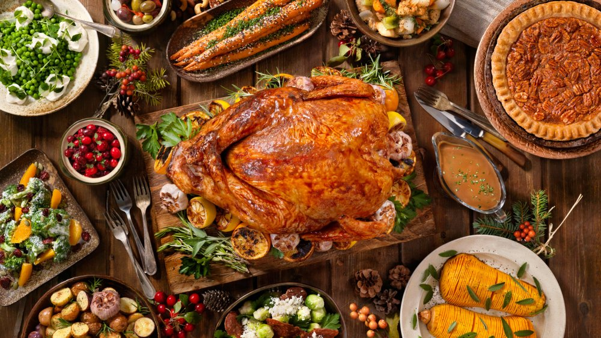

Cookpad - Que la cuisine rime avec plaisir! En cette période particulière de confinement, toute l’équipe de la DENM pense à vous et à vos proches. Pensez aux autres, restez chez vous et surtout prenez soin de vous.
Machines à Café Inissia | Nespresso Je peux stocker et organiser mes recettes, mes commentaires, créer des menus, etc. Aller sur mon carnet. Nouveautés. Anniversaire d'enfant : notre sélection pour une belle table de fête Notre sélection des meilleures cuisinières pour enfants. Suivez-nous. Suivez-nous sur les réseaux sociaux !
LES MEILLEURES RECETTES DE GATEAU Découvrez la Gamme de Machines à Café Inissia par Nespresso, la plus petite et colorée des Machines Nespresso avec toujours ce goût exceptionnel de café.
Recettes de cuisine | 750g De 4/6 à 36 mois, des gammes adaptées aux besoins spécifiques de bébé ! Des produits, conseils et des Recettes pour bébé !
Gateau : nos délicieuses recettes de gateau Bouillon Concentré Recettes. Trouvez votre idéal de saveur avec le bouillon concentré Campbell’s! Nos bouillons concentrés sont jusqu’à quatre fois plus concentrés que nos bouillons prêts à utiliser.
Recettes de cocktails et boissons Soif de recettes ? On se donne rendez-vous dans votre boîte mail ! Découvrir nos newsletters. Retrouvez Marmiton où que vous soyez en téléchargeant l'application. Concocté avec ♥ par Marmiton. Tous droits réservés Marmiton.org - 1999-2021.
Recettes de cocktails et boissons
2021.04.13 13:09

Accueil Aujourd'hui Les plus connus Cocktail au hasard Aujourd'hui sur 1001Cocktails Je recherche Cocktails par thème Idées recettes Nouveautés Cocktails par ingrédient Magazine Forums Cocktail au hasard
4.2 / 5 sur 1825 avis Ces sélections pourraient vous intéresser Cocktails sans Alcool 258 recettes Cocktails au Rhum 540 recettes 96 Grands Classiques 97 recettes Punchs et Sangrias 89 recettes Cocktails à la Vodka 751 recettes Shooters 154 recettes
Soupe champenoise
3.5 / 5 sur 1743 avis
Sex on the beach
4.4 / 5 sur 1503 avis
Blue Lagoon
4.1 / 5 sur 1480 avis
Cosmopolitan
4.2 / 5 sur 1276 avis
Caipirinha
3.9 / 5 sur 1260 avis
Spritz
2.3 / 5 sur 1259 avis Les alcools les plus utilisés
Champagne
211 recettes
Voir les recettes
Rhum
10 recettes
Voir les recettes
Vodka
788 recettes
Voir les recettes
Cognac
244 recettes
Voir les recettes
Gin
537 recettes
Voir les recettes
Whisky (bour...
293 recettes
Voir les recettes
Negroni
2.6 / 5 sur 1239 avis
Planter's Punch
3 / 5 sur 1238 avis
Marquisette
3 / 5 sur 1230 avis
Spritz dolce
2.8 / 5 sur 1128 avis Les recettes de #COCKTAILS les plus populaires
Tequila Sunrise
B-52
Daiquiri
Sangria espagnole
Cuba libre
Cendrillon
A B C D E F G H I J K L M N O P Q R S T U W X Y Z
Mixé avec ♥ par 1001Cocktails
Tous droits réservés 1001cocktails - 1997- 2021
Politique de confidentialité ● Politique de protection des données personnelles ● Préférences cookies ● Version anglaise